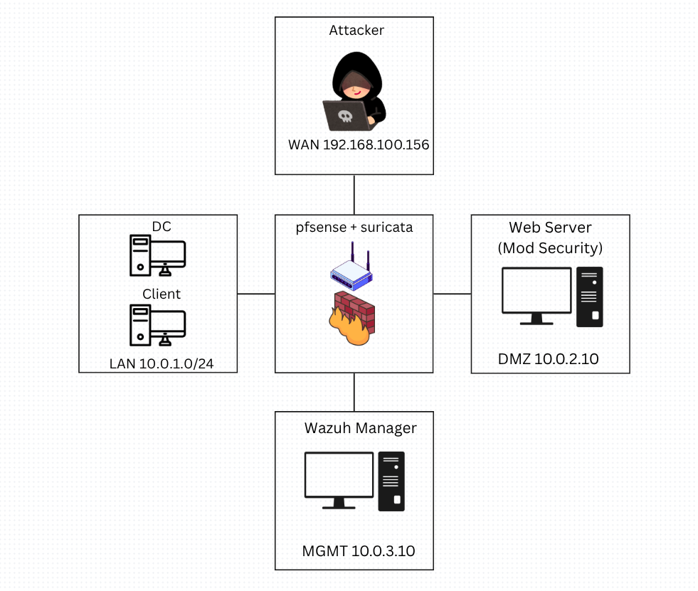
SIEM · XDR · SOC Operations
Wazuh XDR Architecture
A multi-layer SOC lab connecting endpoint telemetry, web attack logs, pfSense firewall signals, Active Directory authentication events, vulnerability context, VirusTotal enrichment, and Wazuh Active Response. This page is structured as a visual case study so recruiters can follow the detection path without reading the full report.
Wazuh ManagerWindows AgentpfSense + SuricataModSecurityAD Event Logs
4demo scenarios
5Collect → Analyze → Protect → Respond → Report
Multi-layerendpoint · web · network · identity
Architecture
Lab topology and telemetry path
The lab was designed to make every alert traceable: which system generated the event, how Wazuh parsed it, which rule fired, what response was executed, and what evidence proves the response.
What I deployed
- Attacker WAN: generated SQL injection, brute-force, and controlled malware test scenarios.
- pfSense + Suricata: central gateway, network sensor, syslog source, and firewall enforcement point.
- Web Server + ModSecurity: DMZ application layer producing WAF and Apache web-attack logs.
- Windows Client + Domain Controller: endpoint telemetry, FIM events, Windows Security Event ID 4625, and containment validation.
- Wazuh Manager: log collection, rule matching, correlation, MITRE mapping, integrations, notifications, and Active Response.
| Source | Transport / Signal | Response |
|---|---|---|
| Windows Client / DC | Agent logs over TCP 1514 | Delete malware or isolate host with Windows Firewall |
| Web Server | Apache / ModSecurity logs | Trigger pfSense block for attacker IP |
| pfSense / Suricata | Syslog over UDP 514 | Gateway-level visibility and enforcement |
flowchart TB A["Attacker WAN
192.168.100.156"] -->|"SQLi / brute-force / malware test"| FW{"pfSense + Suricata
Central Gateway"} FW -->|"Web traffic"| WEB["Web Server + ModSecurity
DMZ 10.0.2.10"] FW -->|"LAN traffic"| LAN["Windows Client + Domain Controller
LAN 10.0.1.0/24"] WEB -->|"ModSecurity and Apache logs"| WAZ["Wazuh Manager
MGMT 10.0.3.10"] LAN -->|"Agent logs TCP 1514
FIM + Security Event Logs"| WAZ FW -->|"Syslog / Suricata UDP 514"| WAZ WAZ -->|"Index and search"| DASH["Wazuh Dashboard"] WAZ -->|"Active Response: SSH block"| FW WAZ -->|"Active Response: netsh / delete file"| LAN
netsh isolation/removal.XDR capability map
Collect → Analyze → Protect → Respond → Report
01
Collect
Agent logs, syslog, WAF logs, FIM events, Windows Security logs.
02
Analyze
Decoders, rules, correlation, severity, MITRE mapping.
03
Protect
FIM, SCA, vulnerability detection, inventory, malware signals.
04
Respond
Delete file, block IP, isolate endpoint, notify analyst.
05
Report
Dashboard evidence, email notification, audit trail.
Detection flowcharts
Scenario 1
Malware C2 detection with FIM + VirusTotal + file removal
Goal: detect a suspicious executable on a Windows client, enrich it with external threat intelligence, raise a high-severity alert, notify the analyst, and validate that the endpoint response can remove the file.
flowchart LR F["demon.exe appears on Windows Client"] --> A["Wazuh FIM records file path and hash"] A --> V["VirusTotal integration checks file hash"] V --> R["Rule 87105
Alert level 12"] R --> E["Email notification and dashboard evidence"] R --> D["Active Response
delete-malware script"] D --> P["Endpoint proof:
custom-delete.log success"]
What the analyst sees
- Threat intel verdict: VirusTotal flags the sample, giving external context beyond local file creation.
- Wazuh fields:
data.integration=virustotal,positives=51,total=70, source file path, hashes, and permalink. - Rule evidence: Wazuh rule 87105 with alert level 12 is suitable for notification or controlled response.
- Response proof: the local custom delete log shows the malware file deletion workflow completed successfully.
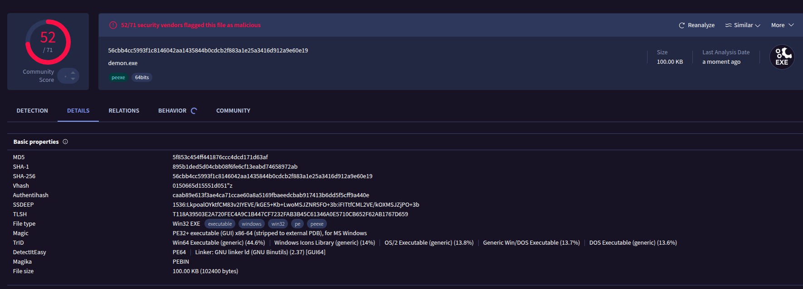
demon.exe as malicious, providing the external reputation signal.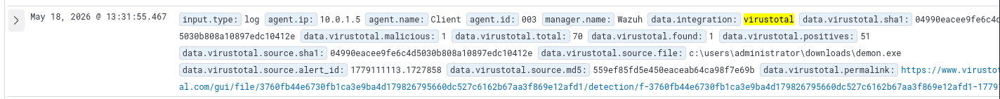
malicious=1, positives=51, total=70, source path, hash values, and a VirusTotal permalink.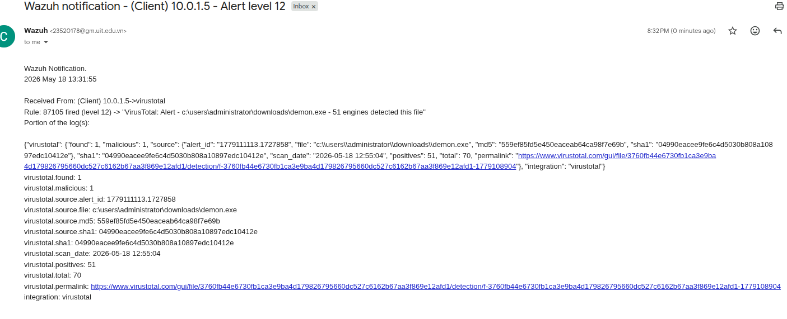
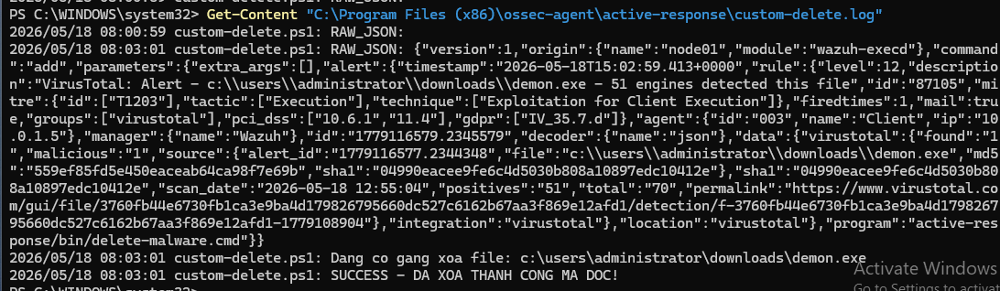
Scenario 2
SCA and CVE posture management
Goal: show that Wazuh can support proactive SOC work, not only attack detection. I intentionally used weak password policy and outdated software so Wazuh could surface configuration and CVE risk.
flowchart LR B["Weak password policy
and old Notepad++"] --> S["SCA benchmark scan"] B --> I["Software inventory scan"] S --> C["Failed CIS check
Minimum password length"] I --> V["CVE matching
Notepad++ 7.8"] C --> R["Remediation guidance"] V --> P["Prioritize high severity packages"]
What the analyst sees
- Configuration evidence: password policy is intentionally weak, including minimum length of one character and disabled complexity.
- SCA result: the CIS Microsoft Windows Server 2022 benchmark shows a low score and many failed controls.
- Rule detail: the failed minimum password length check includes rationale, remediation, and compliance mapping.
- CVE evidence: Wazuh maps installed Notepad++ 7.8 to high-severity vulnerabilities for risk prioritization.
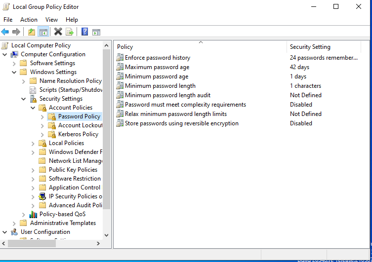
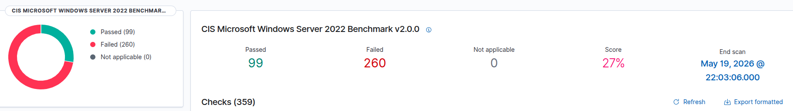
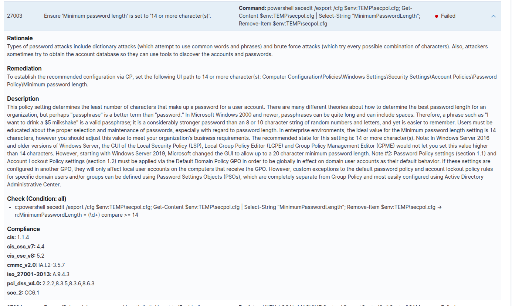
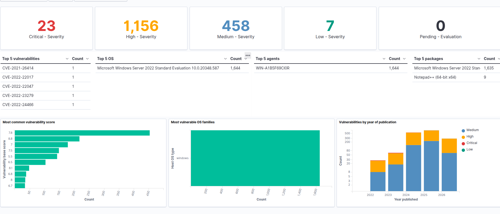
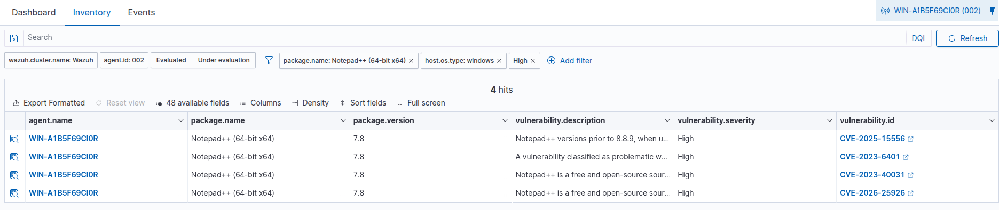
Scenario 3
Web attack alert to pfSense block
Goal: connect an application-layer attack signal to a network-layer containment action. ModSecurity detects the SQL injection pattern, Wazuh correlates it, and a custom active-response script blocks the attacker IP on pfSense.
flowchart LR A["Attacker sends SQLi request
192.168.100.156"] --> W["Web Server + ModSecurity
writes access log"] W --> Z["Wazuh parses web-accesslog"] Z --> R["Rule 31164
SQL injection attempt"] R --> S["custom-pfsense-block.sh
extracts source IP"] S --> P["SSH to pfSense
easyrule block WAN"] P --> B["WAN alias contains
192.168.100.156/32"]
What the analyst sees
- Alert fields: Wazuh records the malicious request, source IP, rule description, rule ID, and MITRE mapping.
- Response log: the Wazuh active response log shows the custom script starting and successfully blocking
192.168.100.156. - Firewall proof: pfSense WAN rules show the attacker IP added to
EasyRuleBlockHostsWAN. - SOC value: this demonstrates cross-layer response: Web/WAF signal → Wazuh rule → network firewall containment.
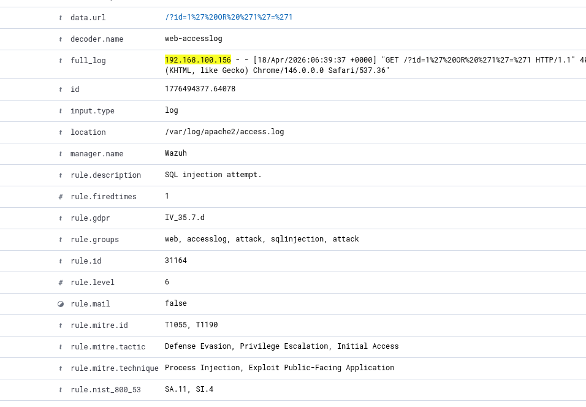
192.168.100.156 and maps it to rule 31164.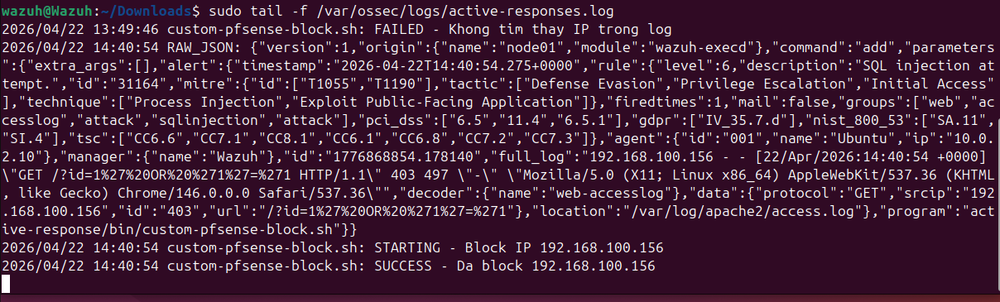
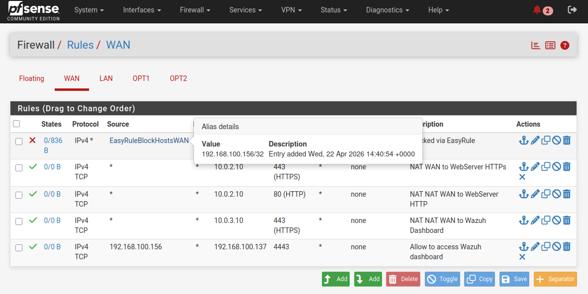
Scenario 4
Active Directory brute-force detection and endpoint isolation
Goal: detect repeated Windows logon failures against an AD account, map the behavior to brute-force / credential access, and validate containment through Windows Firewall and network failure evidence.
flowchart LR T["Repeated invalid logons
Administrator"] --> E["Domain Controller logs
Event ID 4625"] E --> W["Wazuh Agent forwards
Windows Security logs"] W --> R["Rule 60204
Multiple logon failures"] R --> M["MITRE T1110
Credential Access"] R --> N["Active Response
netsh.exe"] N --> F["Windows Firewall rule
block inbound and outbound"] F --> V["Validation:
ping General failure"]
What the analyst sees
- Identity telemetry: repeated failed logons generate Windows Security Event ID 4625 on the Domain Controller.
- Correlation: Wazuh rule 60204 groups multiple failures and maps them to MITRE T1110 Brute Force.
- Response: Wazuh executes the
netsh.exeactive response module. - Containment proof: Windows Firewall blocks inbound and outbound connections, and ping to the gateway returns
General failure.
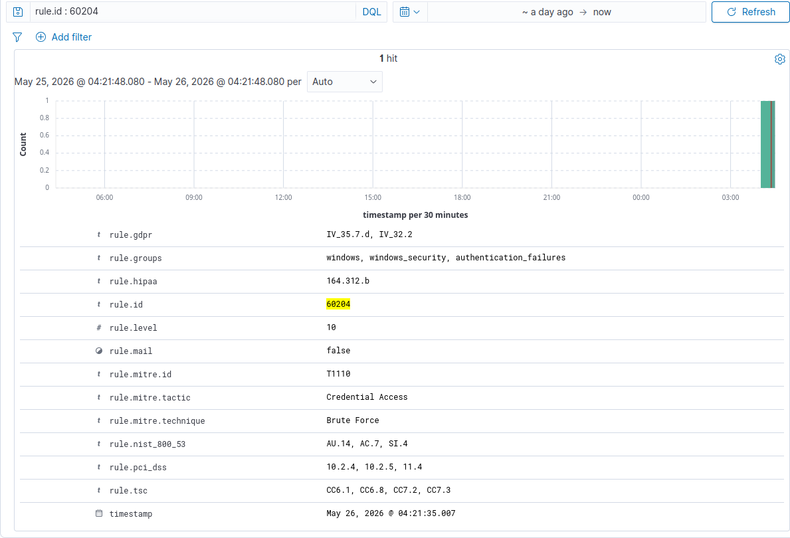
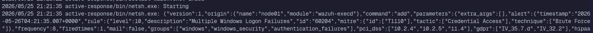
netsh.exe starting for the multiple Windows logon failures alert.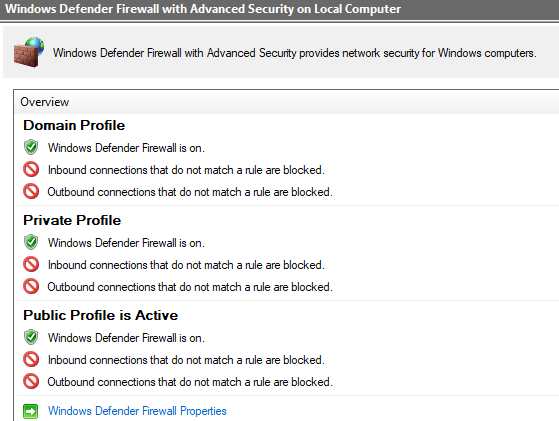
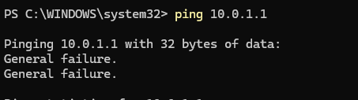
ping 10.0.1.1 returns General failure, validating endpoint isolation.SOC value
Detection engineering skills
- Mapped raw logs into Wazuh rules, severity, MITRE context, and analyst-readable evidence.
- Validated multiple telemetry types: FIM, VirusTotal enrichment, ModSecurity logs, Windows Security logs, SCA, and CVE data.
- Explained why each signal matters and what an analyst should inspect during triage.
Response engineering skills
- Implemented controlled Active Response for file deletion, pfSense blocking, and Windows Firewall isolation.
- Collected proof of response through dashboard fields, active response logs, firewall state, and connectivity tests.
- Understood production limitations: whitelist, rollback, tuning, and change control are required before automatic blocking in real environments.